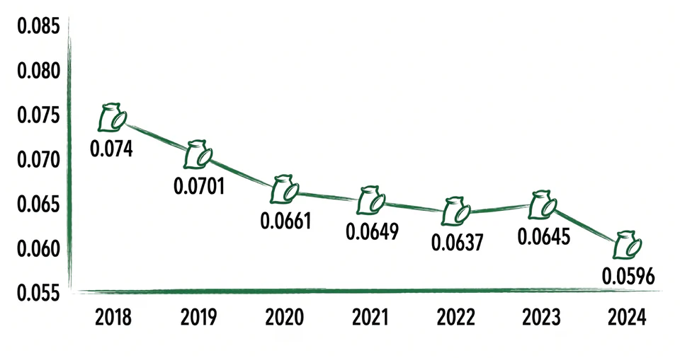
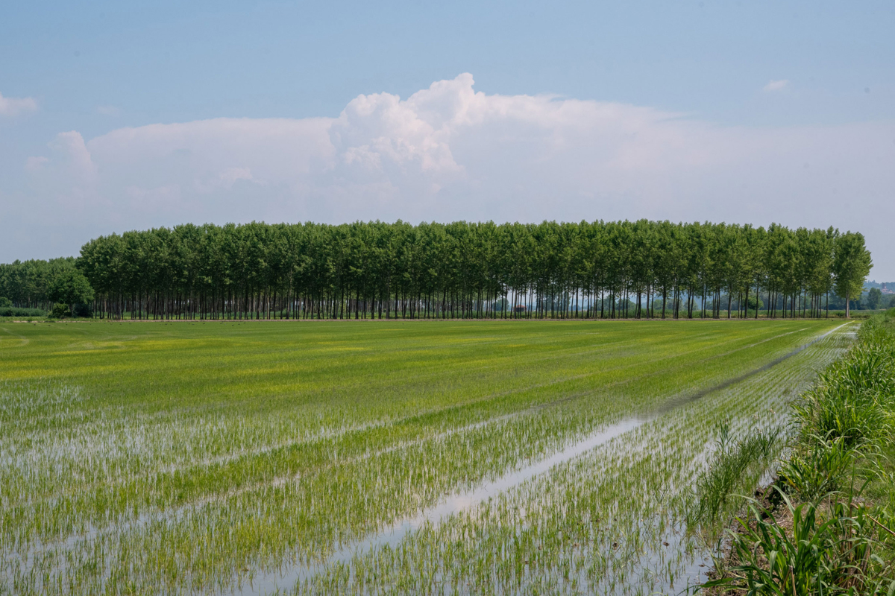
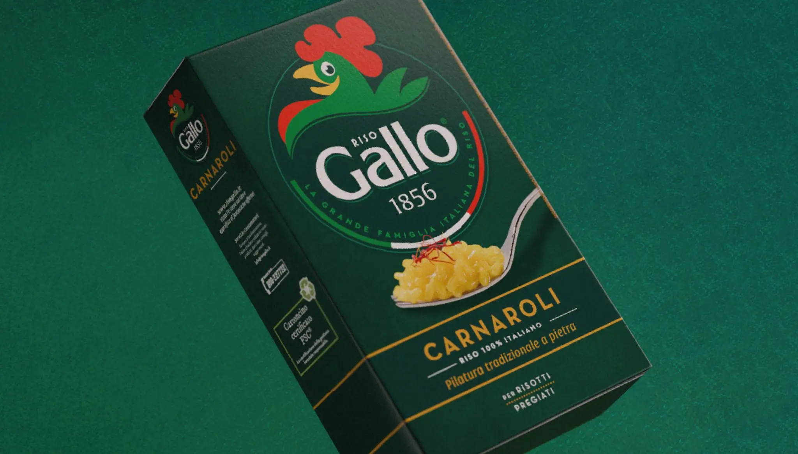

Sole, acqua e vento
100%
Tutta l'elettricità che usiamo arriva da fonti pulite e rinnovabili.
Risparmio idrico
-41,5%
Abbiamo ridotto l'acqua prelevata per ogni quintale di riso rispetto al 2023.
Aria più pulita
-12,9%
Meno emissioni dirette di gas serra nell'atmosfera per ogni confezione creata.
Meno imballaggi

Usiamo solo il materiale strettamente necessario per confezionare il riso.

Amici delle foreste
100%
Tutto il nostro cartoncino è certificato FSC per proteggere i polmoni del mondo.

Seconda vita ai rifiuti
81,7%
Quasi la totalità dei nostri scarti viene recuperata e trasformata in nuova risorsa.